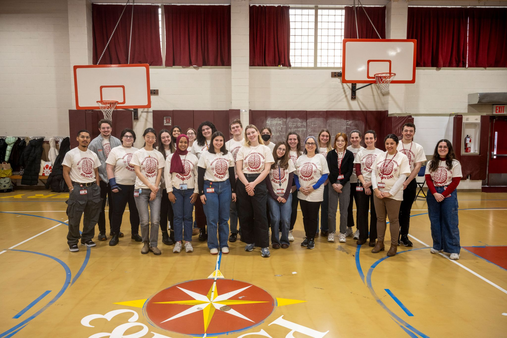
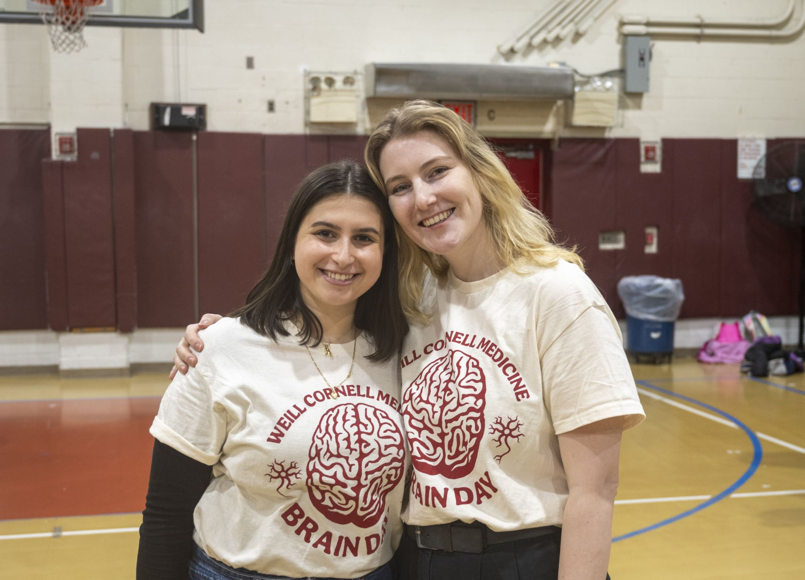
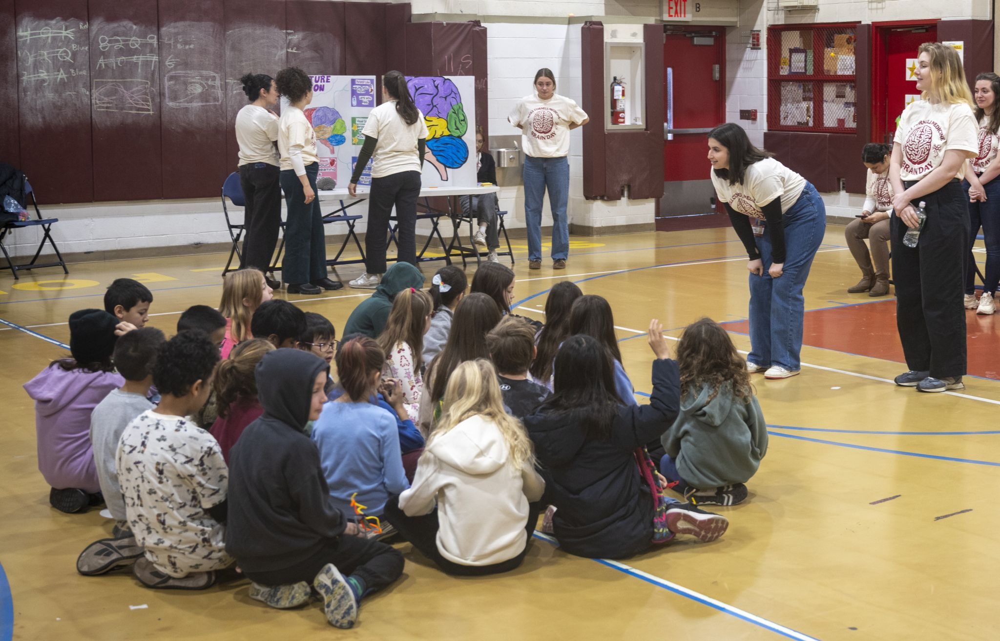

Machine Learning in Medicine Webinar Series
I help organize the Machine Learning in Medicine (MLiM) virtual webinar series, where we host experts on AI applications in healthcare.
Brain Awareness Day - Weill Cornell
I co-organized Brain Awareness Day in December 2024, an educational outreach event bringing neuroscience to local 4th-grade students.


